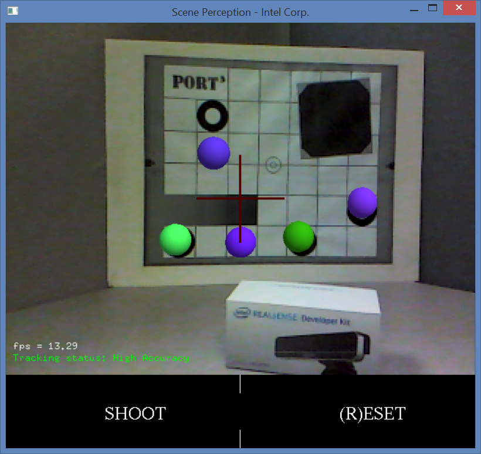

Sample: RF_AugmentedRealitySP |
Top Previous Next |
|
Introduction The RF_AugmentedRealitySP sample is a C++ game that illustrates how to use the SDK scene perception features for a simple game. The game scans your scenes and creates a 3D mesh model. You can shoot balls to the 3D mesh and see the balls stick to the mesh. Launchy The sample can be launched directly from the bin folder of the SDK installation, or compiled and executed using Microsoft Visual Studio. The project and source files are located inside the sample/RF_AugmentedRealitySP folder. Operations The sample window is similar to Figure 153:  Figure 153: Sample DepthBlend Click the SHOOT button to shoot the balls to your scenes and see the balls stick to the detected 3D mesh. Click the RESET button to restart the scanning process.
|